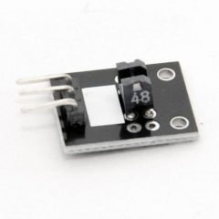
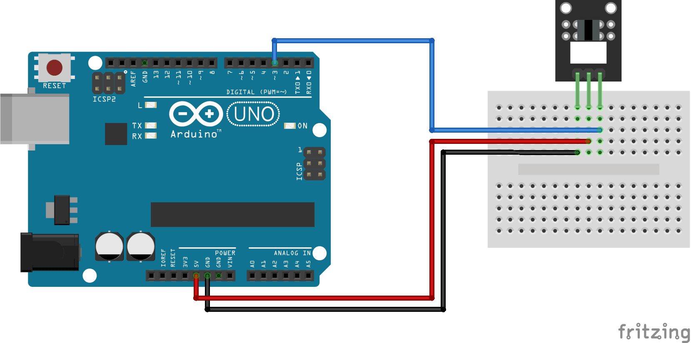

|  |
|  |
| THe KY-010 Photo Interrupter module consists of an optical emitter/detector in the front and two resistors (1 kΩ and 33 Ω) in the back. The sensor uses a beam of light between de emitter an detector to check if the path between both is being blocked by an opaque object. |
Codeint Led = 13; // define LED pin int buttonpin = 3; // define photo interrupter signal pin int val; //define a numeric variable void setup() { pinMode(Led, OUTPUT); // LED pin as output pinMode(buttonpin, INPUT); //photo interrupter pin as input } void loop() { val=digitalRead(buttonpin); //read the value of the sensor if(val == HIGH) // turn on LED when sensor is blocked { digitalWrite(Led,HIGH); } else { digitalWrite(Led,LOW); } } |
| Первый Модуль Третий Модуль Source |